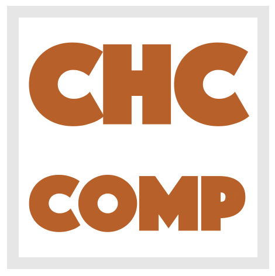

|  |
Constrained Horn Clauses (CHC) is a fragment of First
Order Logic (FOL) that is sufficiently expressive to
describe many verification, inference, and synthesis
problems including inductive invariant inference, model
checking of safety properties, inference of procedure
summaries, regression verification, and sequential
equivalence. The CHC competition (CHC-COMP) will compare
state-of-the-art tools for CHC solving with respect to
performance and effectiveness on a set of publicly
available benchmarks. The winners among participating
solvers are recognized by measuring the number of
correctly solved benchmarks as well as the runtime. The
results of the fourth CHC-COMP will be announced at the HCVS workshop
affiliated with ETAPS 2021. |
The list of participants will be made public, together with the competition results, at the HCVS workshop (March 28). If you would like to submit a solver, and have not yet been in touch with the organisers, please add a note in the Gitter chat, or send a mail to Philipp Ruemmer and Grigory Fedyukovich.
Solvers have to be provided in the form of a StarExec package. As an example, you can have a look at the Eldarica package from 2019. Test your solver on StarExec before submitting! Submission is done by sending a link or the package to Philipp Ruemmer and Grigory Fedyukovich.
The competition benchmarks will be selected among the benchmarks available on Github. If you have benchmarks of any kind that can be made public, and that are not yet on Github, please upload! The final list of benchmarks used in the competition will be made public, together with the competition results, on March 28.
The following tracks will be evaluated at CHC-COMP 2021:
| LIA-Lin: | Linear Integer Arithmetic, linear clauses | ||
| LIA-Nonlin: | Linear Integer Arithmetic, nonlinear clauses | ||
| LIA-Lin-Arrays: | Linear Integer Arithmetic + arrays, linear clauses | ||
| LIA-Nonlin-Arrays: | Linear Integer Arithmetic + arrays, non-linear clauses | ||
| LRA-TS: |
Linear Real Arithmetic, transition systems (exactly one uninterpreted relation symbol, three clauses) |
||
| LRA-TS-parallel: |
Same as LRA-TS, but with a wall-clock time limit instead of CPU-time
limit. We plan to make 4 cores available for each job. |
||
| ADT-NonLin: | Algebraic data-types, non-linear clauses |
| Submission deadline for benchmarks considered for the competition: | March 1 2021 | ||
| Solver submission deadline for test runs (optional, but recommended): | March 8 2021 | ||
| Final solver submission deadline for evaluation: | March 18 2021 | ||
| Presentation of results: | March 28 2021 (HCVS workshop) |
Grigory Fedyukovich, Florida State University, USA
Philipp Ruemmer, Uppsala University, Sweden
Last updated: {{site.time}}